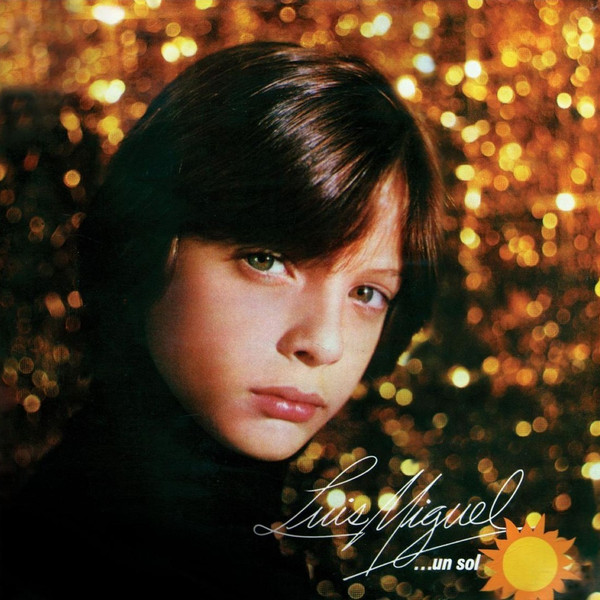
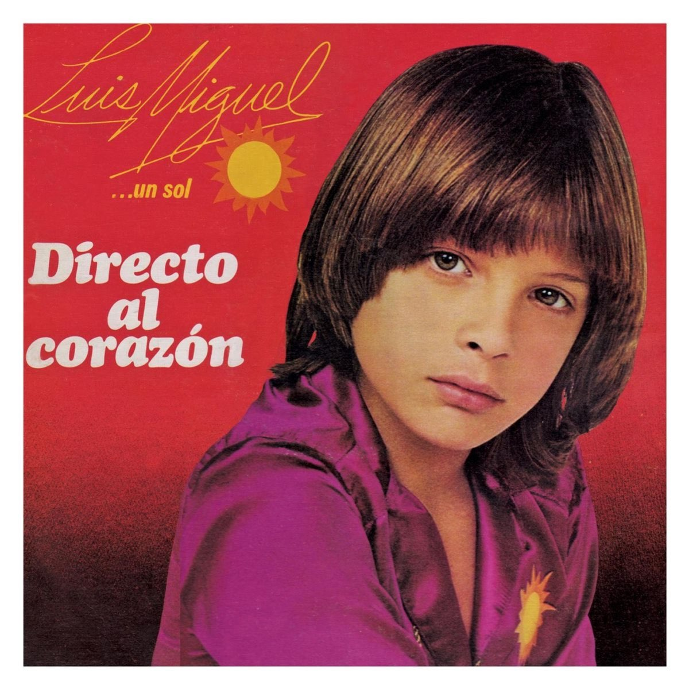
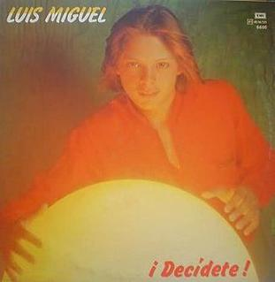
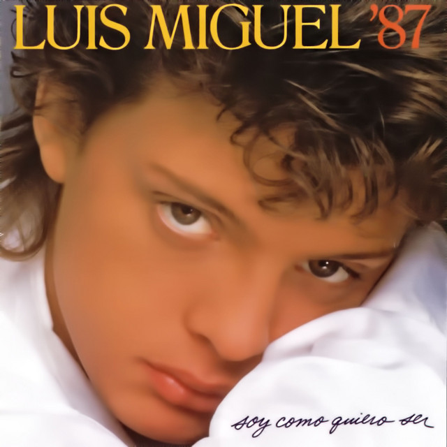
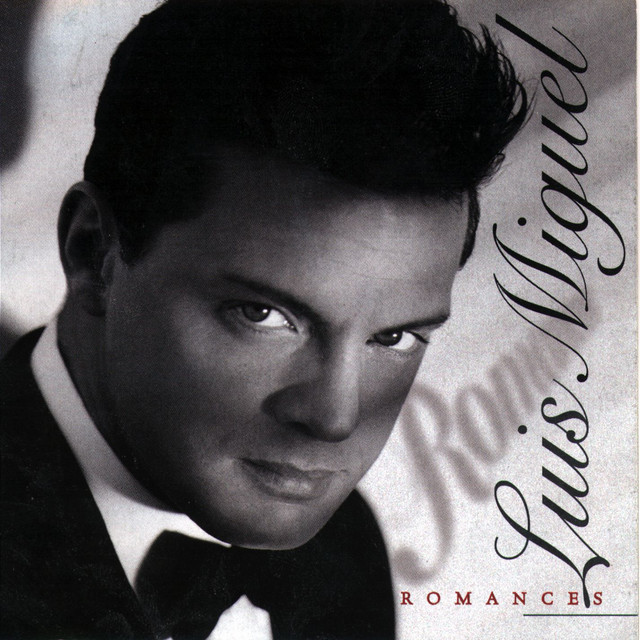
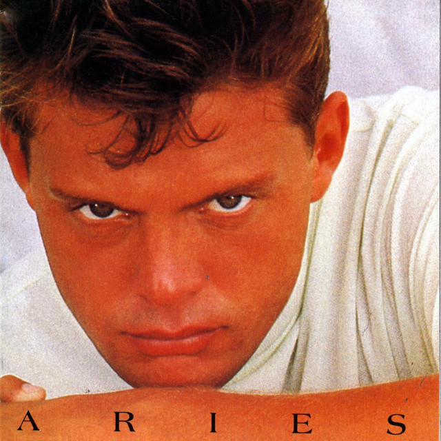
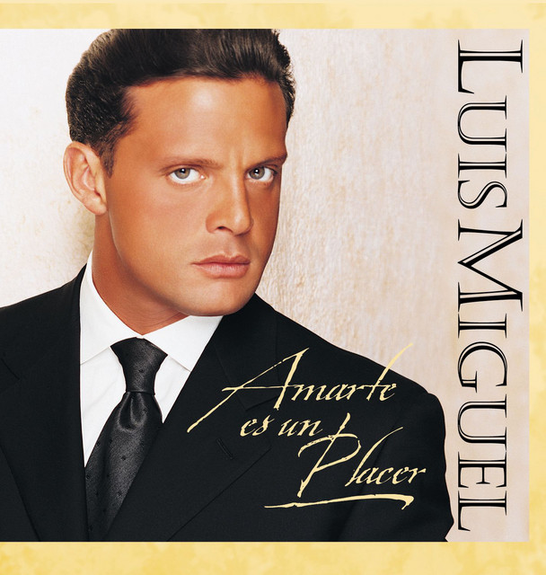
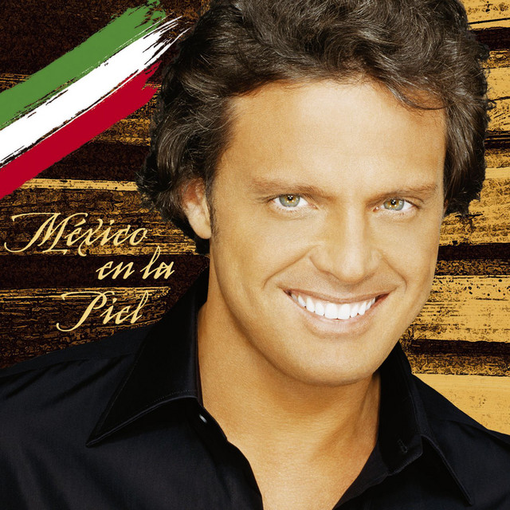
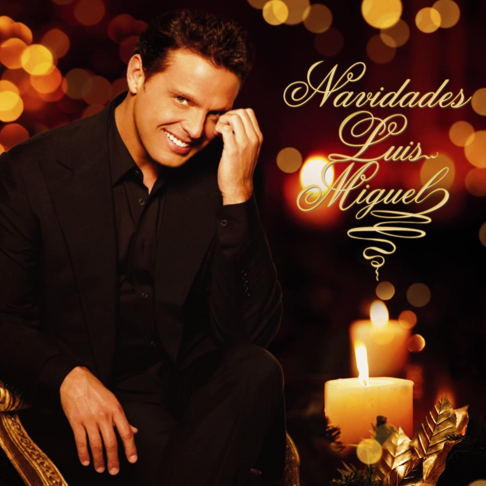

Biografía: |
Criado desde pequeño en México, Luis Miguel grabó su primer álbum a los doce años y a los quince recibió su primer Grammy, fichando por Warner a los diecisiete. |
Géneros Musciales: |
Canción más Escuchada: |
Discografía: |
 |
Un sol |
1982 |
Indefinido el numero de copias vendidas |
 |
Directo al corazón |
1892 |
Indefinido el numero de copias vendidas |
 |
Decídete |
1983 |
Indefinido el numero de copias vendidas |
 |
Soy como quiero ser |
1987 |
150,000 copias. |
 |
Romance |
1991 |
5 millones de copias |
 |
Aries |
1993 |
100,000 copias |
 |
Amarte es un placer |
1999 |
2 millones copias |
 |
México en la piel |
2004 |
3 millones copias |
 |
Navidades |
2006 |
60,000 copias |
Entre muchos mas |
Cónoce más sobre Luis MIguel: |
|
|
|
|
|
|